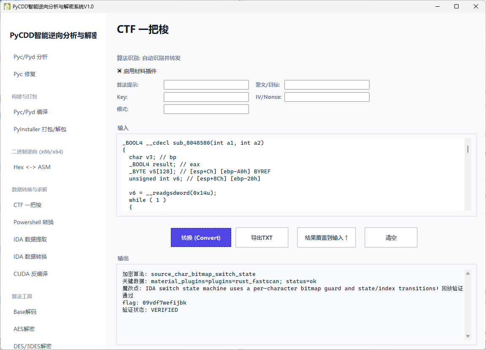

GFSJ0780-【76号】
神题 考眼力 还有一个花指令
先nop jmp无限跳转 然后main函数打开
int __usercall sub_8048420@<eax>(int a1@<eax>)
{
int v1; // ebx
int v3; // [esp+18h] [ebp-Ch] BYREF
void *v4; // [esp+1Ch] [ebp-8h] BYREF
v3 = 0;
v4 = nullptr;
*(_BYTE *)(a1 - 57) = __ROR1__(*(_BYTE *)(a1 - 57), 68);
__printf_chk(1);
v1 = getline((int)&v4, (int)&v3, stdin);
if ( v1 >= 0 )
v1 = sub_8048580((int)v4, 0);
__printf_chk(1);
free(v4);
return v1;
}
_BOOL4 __cdecl sub_8048580(int a1, int a2)
{
char v3; // bp
_BOOL4 result; // eax
_BYTE v5[128]; // [esp+Ch] [ebp-A0h] BYREF
unsigned int v6; // [esp+8Ch] [ebp-20h]
v6 = __readgsdword(0x14u);
while ( 1 )
{
memset(v5, 0, sizeof(v5));
v3 = *(_BYTE *)(a1 + a2);
v5[(v3 + 64) % 128] = 1;
switch ( v3 )
{
case '\n':
return a2 == 13 && v5[74] != 0;
case '0':
if ( a2 || !v5['p'] )
return 0;
a2 = 1;
continue;
case '1':
if ( a2 == 14 && v5['q'] )
goto LABEL_12;
return 0;
case '2':
if ( a2 == 20 && v5['r'] )
goto LABEL_15;
return 0;
case '3':
if ( a2 != 89 || !v5['s'] )
return 0;
a2 = 90;
continue;
case '4':
if ( a2 != 15 || !v5['t'] )
return 0;
a2 = 16;
continue;
case '5':
if ( a2 != 14 || !v5['u'] )
return 0;
LABEL_12:
a2 = 15;
continue;
case '6':
if ( a2 != 12 || !v5[118] )
return 0;
a2 = 13;
continue;
case '7':
if ( a2 != 5 || !v5[119] )
return 0;
a2 = 6;
continue;
case '8':
result = 0;
if ( v5[121] )
return a2 == 33 || a2 == 2;
return result;
case '9':
if ( a2 != 1 || !v5[121] )
return 0;
a2 = 2;
continue;
case 'a':
if ( a2 != 35 || !v5[33] )
return 0;
a2 = 36;
continue;
case 'b':
if ( a2 != 11 || !v5[34] )
return 0;
a2 = 12;
continue;
case 'c':
if ( a2 != 32 || !v5[33] )
return 0;
a2 = 33;
continue;
case 'd':
if ( a2 != 3 || !v5[36] )
return 0;
a2 = 4;
continue;
case 'e':
if ( a2 != 7 || !v5[37] )
return 0;
a2 = 8;
continue;
case 'f':
if ( !v5[38] || a2 != 8 && a2 != 4 )
return 0;
goto LABEL_53;
case 'g':
return a2 == 12 && v5[52] != 0;
case 'h':
if ( a2 != 13 || !v5[39] )
return 0;
a2 = 14;
continue;
case 'i':
if ( a2 != 9 || !v5[41] )
return 0;
a2 = 10;
continue;
case 'j':
if ( a2 != 10 || !v5[42] )
return 0;
a2 = 11;
continue;
case 'k':
return a2 == 12 && v5[43] != 0;
case 'l':
if ( a2 != 19 || !v5[44] )
return 0;
a2 = 20;
continue;
case 'm':
if ( a2 != 17 || !v5[45] )
return 0;
a2 = 18;
continue;
case 'n':
return a2 == 18 && v5[45] != 0;
case 'o':
if ( !v5[46] || a2 != 6 && a2 != 28 )
return 0;
LABEL_53:
++a2;
continue;
case 'p':
if ( a2 != 30 || !v5[48] )
return 0;
a2 = 31;
break;
case 'q':
if ( a2 != 29 || !v5[49] )
return 0;
a2 = 30;
break;
case 'r':
if ( a2 != 20 || !v5[50] )
return 0;
LABEL_15:
a2 = 21;
break;
case 's':
if ( a2 != 25 || !v5[51] )
return 0;
a2 = 26;
break;
case 't':
return a2 == 24 && v5[50] != 0;
case 'u':
if ( a2 != 26 || !v5[53] )
return 0;
a2 = 27;
break;
case 'v':
if ( a2 != 2 || !v5[54] )
return 0;
a2 = 3;
break;
case 'w':
if ( a2 != 6 || !v5[55] )
return 0;
a2 = 7;
break;
case 'x':
if ( a2 != 22 || !v5[56] )
return 0;
a2 = 23;
break;
case 'y':
if ( a2 != 23 || !v5[57] )
return 0;
a2 = '\x18';
break;
case 'z':
return a2 == 21 && v5[33] != 0;
default:
return 0;
}
}
}
其中 a1 是输入字符串地址，a2 初始值为 0，那么只需要从索引 0 开始跟踪能够继续执行的分支这个真是考眼力 能看到他的判断 a2 == 0 然后我们从开始找
case '0':
if ( a2 || !v5['p'] )
return 0;
a2 = 1;
continue;
然后a2 = 1 去找
case '9':
if ( a2 != 1 || !v5[121] )
return 0;
a2 = 2;
continue;
然后然后然后

flag
flag{09vdf7wefijbk}
评论